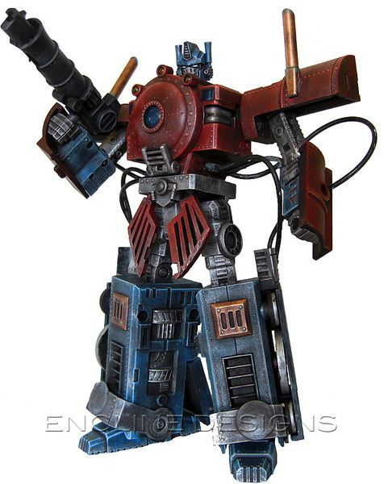

Tue, 31 Aug 2010 02:06:01 ·
gamefreaksnz justinrampage custom built

Custom built Steampunk Optimus Prime that transforms into a steam locomotive by eNcliNe desigNs! Hell yes!
Steampunk Prime by eNcliNe desigNs (Flickr) (Twitter)
Via: freakonomicon | geekleetist | svalts | thedailywhat
O, I like this!